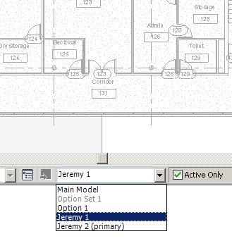

Automate DesignOption and 64 Bit Add-In Templates
Let's start off the week with another idea from Rudolf Honke of acadGraph CADstudio GmbH. He recently presented his results of exploring the Revit ribbon internals using UISpy, driving Revit using UI Automation, subscribing to UI Automation events, and switching between different projects and views.
Here is another of his ideas of making use of UI Automation:
This screen snapshot shows the design options dropdown list:

When showing elements programmatically using the app.ActiveUIDocument.ShowElements( elementSet ) method, it might occur that some elements cannot be shown because their design option is currently invisible.
The current design option visibility is defined per document and affects all views.
UI Automation could be used to set the current design option to the selected element's one, so it can be made visible.
So, if you want to show a given element, you can compare its design option with the current one before showing it.
Of course this is only possible if all elements in the element set passed in the ShowElements have the same design option.
If you just want to show a single element, this will never be a problem.
Yet again, many thanks to Rudolf for his many ideas and these valuable pointers!
64-bit Visual Studio DevTV Revit Add-in Template
Stephen LeCompte posted a comment on the DevTV add-in templates which integrate with the Visual Studio new project wizard to automatically set up a new Visual Studio project for a Revit add-in complete with skeleton external application, external command, and add-in manifest code. By the way, there is also a streamlined and updated C# version for my personal use with comments removed and other tweaks.Stephen worked on making use of the templates on a 64 bit system and ran into some problems which were finally resolved:
OK, I did eventually find a solution to my problem where I do not have 32-bit Revit version installed but only 64-bit Revit.
After downloading the winzip file above...
- extract the contents
- within the .csproj file...
- do a find/replace on $(ProgramFiles) and replace with C:\Program Files
- find any instances where processorArchitecture=x86 and replace with processorArchitecture=x64
- delete the old winzip file
- create a new .zip that combines all the files completed.
The initial problem was trivial, forgetting to delete the original winzip even though the appropriate changes were made.
Here are Stephen's 64 bit templates:
They have been set up so that if you download the first templates and they do not work, you can still simply download this second version without deleting the old ones and see the new ones clearly as Revit Architecture 2011 64-bit only Addin.
Many thanks to Stephen for solving the issue and sharing his files with us!